PCIE Interface (0x0000-0x0148) :
These registers provide access the PCIe MAC's interface controls such as SERDES, port type, and PCS control. There are also controls for the associated StreamIO port.
Register Summary
Register Definitions
MAC Interrupt Status (TRIO_PCIE_INTFC_MAC_INT_STS: 0x0000)
Provides MAC interrupt status. Each bit is write-1-to-clear These bindings for these interrupts are configured in TRIO_CFG_INT_BIND.
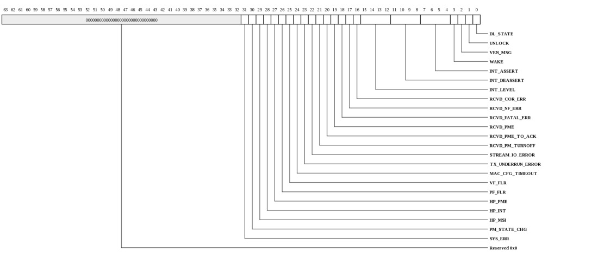
| Bits | Name | Type | Reset | Description
| 31 | SYS_ERR | W1TC | 0 | Root complex mode. Asserted (as a pulse) when a device in the hierarchy has reported a ERR_COR, ERR_FATAL, or ERR_NONFATAL with the associated enable bit set in the Root Control register. This error also asserts when an internal ERR_COR, ERR_FATAL, or ERR_NONFATAL is detected. |
| 30 | PM_STATE_CHG | W1TC | 0 | Port's power management state has changed. This includes both entrance and exit from L0, L1, L0s, and L2. |
| 29 | HP_MSI | W1TC | 0 | Asserted (as a pulse) when MSI/X is enabled and hot plug interrupts are enabled in the slot control register and any bit in the slot status register transitions from 0 to 1 and the associated event notification is enabled in the slot control register. |
| 28 | HP_INT | W1TC | 0 | Asserted (stays high) when the INTx Assertion Disable bit in the Command register is zero and Hot-Plug interrupts are enabled in the slot control register and any bit in the slot status register is 1 and the associated event notification is enabled in the slot control register. |
| 27 | HP_PME | W1TC | 0 | Asserted (as a pulse) when the PME Enable bit in the PMCSR is set to 1 and any bit in the slot status register transitions from 0 to 1 and the associated event notification is enabled in the slot control register. |
| 26 | PF_FLR | W1TC | 0 | The physical function has initiated a function level reset. Software must shut down transactions for the VF and clear the associated PF_FLR_CTL.FLR_BUSY bit. Interrupt binding mode-0 (self masking) should be used for this interrupt. |
| 25 | VF_FLR | W1TC | 0 | One of the virtual functions has initiated a function level reset. VF_FLR_CTL.FLR_PENDING will indicate which function(s) are being reset. Software must shut down transactions for the VF and clear the associated VF_FLR_CTL.FLR_BUSY bit. This interrupt will trigger as long as any VFs are in FLR. Interrupt binding mode-0 (self masking) should be used for this interrupt. |
| 24 | MAC_CFG_TIMEOUT | W1TC | 0 | MAC failed to respond to an MMIO configuration request. |
| 23 | TX_UNDERRUN_ERROR | W1TC | 0 | TX underrun error. This occurs when tclk is set too slow relative to MAC rate. The TX_FIFO_CTL.TX0/1_DATA_AE_LVL settings must be adjusted. |
| 22 | STREAM_IO_ERROR | W1TC | 0 | NOTE: This field only exists in the following devices: Gx9 Gx16 Gx36 Gx72.
StreamIO port reported an error. STREAM_STATUS contains detailed error information. |
| 21 | RCVD_PM_TURNOFF | W1TC | 0 | Received PME_Turn_off message (EP mode) |
| 20 | RCVD_PME_TO_ACK | W1TC | 0 | Received PME_TO_Ack message (RC mode) |
| 19 | RCVD_PME | W1TC | 0 | Power Management event message received (RC mode) |
| 18 | RCVD_FATAL_ERR | W1TC | 0 | Datal error message received (RC mode) |
| 17 | RCVD_NF_ERR | W1TC | 0 | Nonfatal error message received (RC mode) |
| 16 | RCVD_COR_ERR | W1TC | 0 | Correctable error message received (RC mode) |
| 15:12 | INT_LEVEL | W1TC | 0 | IntA/B/C/D is high. (State of the level-capture bits is cleared if link goes down). |
| 11:8 | INT_DEASSERT | W1TC | 0 | IntA/B/C/D deassert message received. |
| 7:4 | INT_ASSERT | W1TC | 0 | IntA/B/C/D assert message received. |
| 3 | WAKE | W1TC | 0 | Wake indication from power management unit due PME being triggered. Used in endpoint mode. Indicates system should repower the associated slot(s). |
| 2 | VEN_MSG | W1TC | 0 | Vendor message received. |
| 1 | UNLOCK | W1TC | 0 | Unlock message received. |
| 0 | DL_STATE | W1TC | 0 | DL_State changed (link came up or went down). This applies to the StreamIO port when StreamIO is enabled for devices that support StreamIO. |
|
|---|
MAC Semaphore (TRIO_PCIE_INTFC_MAC_SEMAPHORE: 0x0008)
Semaphore

| Bits | Name | Type | Reset | Description
| 0 | VAL | RW | 0 | When read, the current semaphore value is returned and the semaphore is set to 1. Bit can also be written to 1 or 0. |
|
|---|
SERDES Config (TRIO_PCIE_INTFC_SERDES_CONFIG: 0x0010)
NOTE: This register only exists in the following devices: Gx9 Gx16 Gx36 Gx72.
Access to SERDES register interface. See SERDES documentation for detailed descriptions of registers.
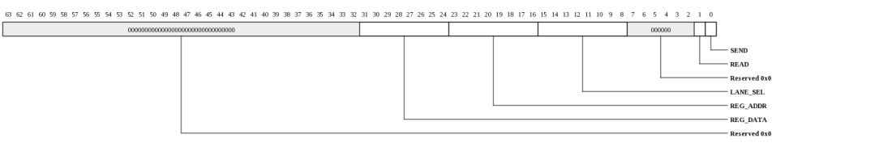
| Bits | Name | Type | Reset | Description
| 31:24 | REG_DATA | RW | 0 | SERDES register data. On writes, this contains data to be written. On reads, this contains the read result. |
| 23:16 | REG_ADDR | RW | 0 | SERDES register address to access. |
| 15:8 | LANE_SEL | RW | 0 | Selects lane(s) for read/write. On writes, more than one lane may be written. On reads, only one bit in LANE_SEL may be set. On ports configured with fewer than 8-lanes, the upper lane bits are ignored. |
| 1 | READ | RW | 0 | When 1, operation is a read. When 0, operation is a write. |
| 0 | SEND | RW | 0 | When written with a 1, the read/write operation will be performed. Hardware clears this bit when the operation is complete. |
|
|---|
Port Configuration (TRIO_PCIE_INTFC_PORT_CONFIG: 0x0018)
Configuration of the PCIe Port
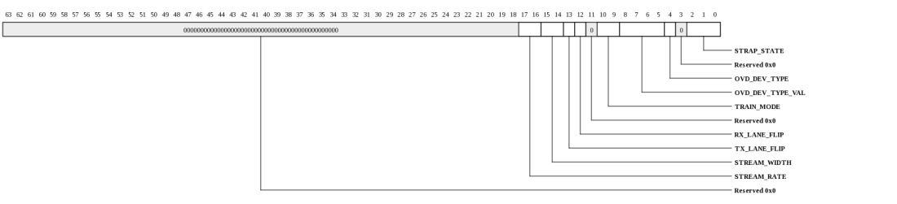
| Bits | Name | Type | Reset | Description
| 17:16 | STREAM_RATE | RW | 0 | NOTE: This field only exists in the following devices: Gx9 Gx16 Gx36 Gx72.
For StreamIO port, configures the rate of the port when TRAIN_MODE is not STRAP.
| Value | Name | Meaning |
|---|
| 0 | R2500 | 2.5 Gbps using 125 MHz core ref clk |
| 1 | R3125 | 3.125 Gbps using 156.25 MHz XAUI ref clk |
| 2 | R5000 | 5.0 Gbps using 125 MHz core ref clk |
| 3 | R6250 | 6.25 Gbps using 156.25 MHz XAUI ref clk |
|
| 15:14 | STREAM_WIDTH | RW | 0 | NOTE: This field only exists in the following devices: Gx9 Gx16 Gx36 Gx72.
For StreamIO port, configures the width of the port when TRAIN_MODE is not STRAP.
| Value | Name | Meaning |
|---|
| 0 | X1 | Streaming port trained as a x1, using lane-0. |
| 1 | X2 | Streaming port trained as a x2, using lanes 0 and 1. |
| 2 | X4 | Streaming port trained as a x4. |
|
| 13 | TX_LANE_FLIP | RW | 0 | For PCIe, used to flip physical TX lanes that were not properly wired. This is not the same as lane reversal which is handled automatically during link training. When 0, TX Lane0 must be wired to the link partner (either to its Lane0 or its LaneN). When TX_LANE_FLIP is 1, the highest numbered lane for this port becomes Lane0 and Lane0 does NOT have to be wired to the link partner. |
| 12 | RX_LANE_FLIP | RW | 0 | For PCIe, used to flip physical RX lanes that were not properly wired. This is not the same as lane reversal which is handled automatically during link training. When 0, RX Lane0 must be wired to the link partner (either to its Lane0 or its LaneN). When RX_LANE_FLIP is 1, the highest numbered lane for this port becomes Lane0 and Lane0 does NOT have to be wired to the link partner. |
| 10:9 | TRAIN_MODE | RW | 0 | Determines how link is trained.
| Value | Name | Meaning |
|---|
| 0 | STRAP | Link will be trained based on the state of the STRAP_STATE. |
| 1 | TRAIN_DIS | Link training is disabled. |
| 2 | TRAIN_ENA | Link training is enabled. Gen1 vs. Gen2 will be autonegotiated for PCIe port. |
|
| 8:5 | OVD_DEV_TYPE_VAL | RW | 0 | Provides the device type when OVD_DEV_TYPE is 1.
| Value | Name | Meaning |
|---|
| 0 | EP | Endpoint |
| 1 | LEGACY_EP | Legacy Endpoint (not typically used) |
| 4 | RC | Root Complex |
| 6 | STREAM | Configure port as a StreamIO interface rather than PCIe.
NOTE: This value is only used in the following devices: Gx9 Gx16 Gx36 Gx72. |
|
| 4 | OVD_DEV_TYPE | RW | 0 | When 1, the device type will be overridden using OVD_DEV_TYPE_VAL. When 0, the device type is determined based on the STRAP_STATE. |
| 2:0 | STRAP_STATE | RO | 0 | Provides the state of the strapping pins for this port.
| Value | Name | Meaning |
|---|
| 0 | DISABLED | Link disabled. Link will need to be configured and enabled by SW |
| 1 | AUTO_CONFIG_ENDPOINT | Link will automatically train as an endpoint. Gen2 vs. Gen1 will be autonegotiated. |
| 2 | AUTO_CONFIG_RC | Link will automatically train as a root complex. Gen2 vs. Gen1 will be autonegotiated. |
| 3 | AUTO_CONFIG_ENDPOINT_G1 | Link will automatically train as an endpoint. Link will be forced as Gen1. |
| 4 | AUTO_CONFIG_RC_G1 | Link will automatically train as a root complex. Link will be forced as Gen1. |
| 5 | AUTO_XLINK | Link will train as a crosslink endpoint.
NOTE: This value is only used in the following devices: Gx9 Gx16 Gx36 Gx72. |
| 6 | STREAM_X1 | Link will train as a X1 3.125 Gbps streaming port rather than a PCIe port.
NOTE: This value is only used in the following devices: Gx9 Gx16 Gx36 Gx72. |
| 7 | STREAM_X4 | Link will train as a X4 3.125 Gbps streaming port rather than a PCIe port.
NOTE: This value is only used in the following devices: Gx9 Gx16 Gx36 Gx72. |
|
|
|---|
Port Status (TRIO_PCIE_INTFC_PORT_STATUS: 0x0020)
Status of the PCIe Port. This register applies to the StreamIO port when StreamIO is enabled.
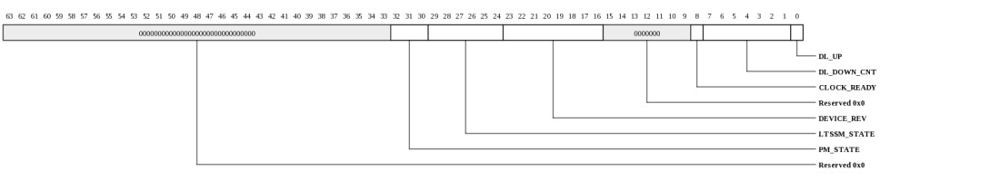
| Bits | Name | Type | Reset | Description
| 32:30 | PM_STATE | RO | 0 | Link power management state (PCIe).
| Value | Name | Meaning |
|---|
| 2 | L1 | |
| 3 | L23RDY_AUX | |
| 4 | L23RDY | |
| 1 | L0S | |
| 0 | L0 | |
|
| 29:24 | LTSSM_STATE | RO | 0 | Link state (PCIe).
| Value | Name | Meaning |
|---|
| 0x0 | DETECT_QUIET | |
| 0x1 | DETECT_ACT | |
| 0x2 | POLL_ACTIVE | |
| 0x3 | POLL_COMPLIANCE | |
| 0x4 | POLL_CONFIG | |
| 0x5 | PRE_DETECT_QUIET | |
| 0x6 | DETECT_WAIT | |
| 0x7 | CFG_LINKWD_START | |
| 0x8 | CFG_LINKWD_ACEPT | |
| 0x9 | CFG_LANENUM_WAIT | |
| 0xa | CFG_LANENUM_ACEPT | |
| 0xb | CFG_COMPLETE | |
| 0xc | CFG_IDLE | |
| 0xd | RCVRY_LOCK | |
| 0xe | RCVRY_SPEED | |
| 0xf | RCVRY_RCVRCFG | |
| 0x10 | RCVRY_IDLE | |
| 0x20 | RCVRY_EQ0 | |
| 0x21 | RCVRY_EQ1 | |
| 0x22 | RCVRY_EQ2 | |
| 0x23 | RCVRY_EQ3 | |
| 0x11 | L0 | |
| 0x12 | L0S | |
| 0x13 | L123_SEND_EIDLE | |
| 0x14 | L1_IDLE | |
| 0x15 | L2_IDLE | |
| 0x16 | L2_WAKE | |
| 0x17 | DISABLED_ENTRY | |
| 0x18 | DISABLED_IDLE | |
| 0x19 | DISABLED | |
| 0x1a | LPBK_ENTRY | |
| 0x1b | LPBK_ACTIVE | |
| 0x1c | LPBK_EXIT | |
| 0x1d | LPBK_EXIT_TIMEOUT | |
| 0x1e | HOT_RESET_ENTRY | |
| 0x1f | HOT_RESET | |
|
| 23:16 | DEVICE_REV | RO | 0 | Device revision ID. |
| 8 | CLOCK_READY | RO | 0 | Indicates the SERDES PLL has spun up and is providing a valid clock. |
| 7:1 | DL_DOWN_CNT | RW | 0 | Indicates the number of times the link has gone down. Clears on read. |
| 0 | DL_UP | RO | 0 | Indicates the DL state of the port. When 1, the port is up and ready to receive traffic. |
|
|---|
Port Credit (TRIO_PCIE_INTFC_PORT_CREDIT: 0x0028)
TX Credit information for the PCIe Port. This is generally for debug only as credits may be consumed by hardware functions at any time.
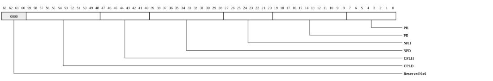
| Bits | Name | Type | Reset | Description
| 59:48 | CPLD | RO | 0 | Completion data credits available. |
| 47:40 | CPLH | RO | 0 | Completion header credits available. |
| 39:28 | NPD | RO | 0 | Non-Posted data credits available. |
| 27:20 | NPH | RO | 0 | Non-Posted header credits available. |
| 19:8 | PD | RO | 0 | Posted data credits available. |
| 7:0 | PH | RO | 0 | Posted header credits available. |
|
|---|
Transmit Request Header Statistics (TRIO_PCIE_INTFC_TX_REQ_HDR_STATS: 0x0030)
Contains TX header counters for performance measurements and diagnostics.
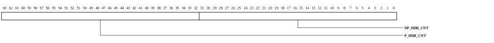
| Bits | Name | Type | Reset | Description
| 63:32 | P_HDR_CNT | RW | 0 | Number of posted packets that have been sent (push DMA and PIO). Clears on read. Saturates at all 1's |
| 31:0 | NP_HDR_CNT | RW | 0 | Number of non-posted packets that have been sent (pull DMA and PIO). Clears on read. Saturates at all 1's |
|
|---|
Transmit Posted Data Statistics (TRIO_PCIE_INTFC_TX_PDAT_STATS: 0x0038)
Contains TX posted data counter for performance measurements and diagnostics.
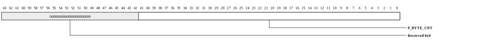
| Bits | Name | Type | Reset | Description
| 41:0 | P_BYTE_CNT | RO | 0 | Number of posted data bytes that have been sent from TRIO (push DMA and PIO). Clears on read. Saturates at all 1's |
|
|---|
Transmit Completion Statistics (TRIO_PCIE_INTFC_TX_CPL_STATS: 0x0040)
Contains TX completion header and data counters for performance measurements and diagnostics.
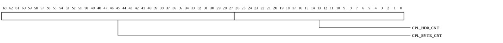
| Bits | Name | Type | Reset | Description
| 63:27 | CPL_BYTE_CNT | RO | 0 | Number of completion bytes that have been sent (MAP-MEM/SQ/RSH). Clears on read. Saturates at all 1's |
| 26:0 | CPL_HDR_CNT | RW | 0 | Number of completions that have been sent (MAP-MEM/SQ/RSH). Clears on read. Saturates at all 1's |
|
|---|
Pipe Clock Count (TRIO_PCIE_INTFC_CLOCK_COUNT: 0x0048)
Provides relative clock frequency between core (tclk) domain and device (pipe clk) clock domains.

| Bits | Name | Type | Reset | Description
| 15:1 | COUNT | RO | 0 | Indicates the number of core clocks that were counted during 1000 device clock periods. Result is accurate to within +/-1 core clock periods. |
| 0 | RUN | RW | 0 | When 1, the counter is running. Cleared by HW once count is complete. When written with a 1, the count sequence is restarted. Counter runs automatically after reset. Software must poll until this bit is zero, then read the CLOCK_COUNT register again to get the final COUNT value. |
|
|---|
Transmit FIFO Control (TRIO_PCIE_INTFC_TX_FIFO_CTL: 0x0050)
Contains TX FIFO thresholds. These registers are for diagnostics purposes only. Changing these values causes undefined behavior.
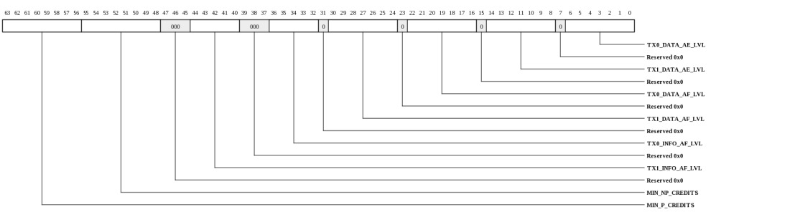
| Bits | Name | Type | Reset | Description
| 63:56 | MIN_P_CREDITS | RW | 4 | This register provides performance adjustment for high bandwidth flows. The MAC will assert almost-full to TRIO if posted credits fall below this level. Note that setting this larger than the initial PORT_CREDIT.PH value will cause WRITES to never be sent. If the initial credit value from the link partner is smaller than this value when the link comes up, the value will be reset to the initial credit value to prevent lockup. |
| 55:48 | MIN_NP_CREDITS | RW | 12 | This register provides performance adjustment for high bandwidth flows. The MAC will assert almost-full to TRIO if non-posted credits fall below this level. Note that setting this larger than the initial PORT_CREDIT.NPH value will cause READS to never be sent. If the initial credit value from the link partner is smaller than this value when the link comes up, the value will be reset to the initial credit value to prevent lockup. |
| 44:40 | TX1_INFO_AF_LVL | RW | 29 | Almost-Full level for TX1 info. |
| 36:32 | TX0_INFO_AF_LVL | RW | 29 | Almost-Full level for TX0 info. |
| 30:24 | TX1_DATA_AF_LVL | RW | 29 | Almost-Full level for TX1 data. |
| 22:16 | TX0_DATA_AF_LVL | RW | 28 | Almost-Full level for TX0 data. |
| 14:8 | TX1_DATA_AE_LVL | RW | 20 | Almost-Empty level for TX1 data. |
| 6:0 | TX0_DATA_AE_LVL | RW | 20 | Almost-Empty level for TX0 data. Typically set to at least roundup(38.0*M/N) where N=tclk frequency and M=MAC symbol rate in MHz for a x4 port (250 MHz). |
|
|---|
Receive FIFO Control (TRIO_PCIE_INTFC_RX_FIFO_CTL: 0x0058)
Contains RX FIFO threshold. This register is for diagnostics purposes only. Changing this values causes undefined behavior.
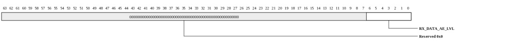
| Bits | Name | Type | Reset | Description
| 6:0 | RX_DATA_AE_LVL | RW | 63 | Almost-Empty level for RX data. |
|
|---|
RX BAR0 Address Mask (TRIO_PCIE_INTFC_RX_BAR0_ADDR_MASK: 0x0060)
Contains the mask applied to incoming requests that target BAR0/1 in endpoint mode. This mask is ignored in root complex mode. This register must be updated if the BAR size is reprogrammed in the MAC. This register resets to the default BAR0 size to allow the rshim region in TRIO to be accessible regardless of the value programmed into the BAR by the BIOS.

| Bits | Name | Type | Reset | Description
| 63:12 | MASK | RW | 00000000007ffh | The address presented to TRIO will be masked to zero in any zeros in the corresponding MASK bits. |
|
|---|
RX BAR2 Address Mask (TRIO_PCIE_INTFC_RX_BAR2_ADDR_MASK: 0x0068)
Contains the mask applied to incoming requests that target BAR2/3 in endpoint mode. This mask is used on all IO addresses in root complex mode. This register is typically left as zero but may be used to remove upper offset bits if desired.
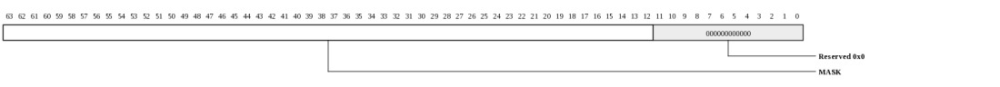
| Bits | Name | Type | Reset | Description
| 63:12 | MASK | RW | fffffffffffffh | The address presented to TRIO's will be masked to zero in any zeros in the corresponding MASK bits. |
|
|---|
Virtual Function Access (TRIO_PCIE_INTFC_VF_ACCESS: 0x0070)
Allows access to virtual function register spaces in endpoint mode.
| Bits | Name | Type | Reset | Description
| 8 | VF_ENA | RW | 0 | When 1, MMIO accesses to the MAC's config space will be targeted to the config space of the virtual function selected by VF_SEL. |
| 7:0 | VF_SEL | RW | 0 | When VF_ENA is 1, this field selects the virtual function whose config space will be accessed. |
|
|---|
Vendor Message (TRIO_PCIE_INTFC_VEND_MSG: 0x0078)
Captures vendor message information (root complex mode)
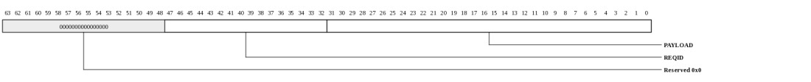
| Bits | Name | Type | Reset | Description
| 47:32 | REQID | RO | 0 | Requester ID. |
| 31:0 | PAYLOAD | RO | 0 | Bytes 12..15 from the vendor message. |
|
|---|
Endpoint Interrupt Generation (TRIO_PCIE_INTFC_EP_INT_GEN: 0x0080)
Controls dispatch of interrupts to the upstream host when port is operating in endpoint mode.
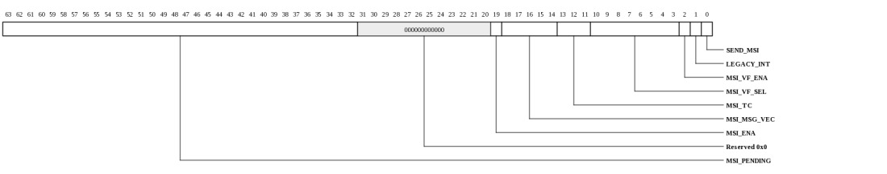
| Bits | Name | Type | Reset | Description
| 63:32 | MSI_PENDING | RW | 0 | This field determines the value of the vector interrupt pending register in the MSI capability structure and is used to indicate the source of pending interrupts. |
| 19 | MSI_ENA | RO | 0 | Indicates that MSI has been enabled and INTx messages will not be sent. This reflects the state of the MSI enable bit in physical function0. |
| 18:14 | MSI_MSG_VEC | RW | 0 | Interrupt vector for the MSI used when multiple message mode is enabled in the MSI control register. |
| 13:11 | MSI_TC | RW | 0 | Traffic class for the MSI |
| 10:3 | MSI_VF_SEL | RW | 0 | When MSI_VF_ENA is 1, this field selects the virtual function. |
| 2 | MSI_VF_ENA | RW | 0 | When 1, the interrupt comes from the virtual function associated with MSI_VF_SEL. |
| 1 | LEGACY_INT | RW | 0 | Used to dispatch legacy INTA/B/C/D messages. An assert message will be sent when this bit transitions from 0 to 1. A deassert message will be sent when this bit transitions from 1 to 0. The interrupt pin register determines which INTx message will be sent. |
| 0 | SEND_MSI | RW | 0 | Set by software when an MSI is to be sent. Cleared by hardware once the MSI has been sent. Software must poll until SEND_MSI is clear before sending a new MSI. |
|
|---|
Endpoint Virtual Function MSI Pending (TRIO_PCIE_INTFC_EP_VF_MSI_PENDING: 0x0088)
Provides MSI-pending state for each VF.

| Bits | Name | Type | Reset | Description
| 63:0 | VAL | RW | 0 | There are 2 pending bits for each VF organized as [1:0]=VF0, [3:2]=VF1 etc. These may be used by the system to indicate interrupt pending state. |
|
|---|
Endpoint MSI-X Data (TRIO_PCIE_INTFC_EP_MSIX_DATA: 0x0090)
Provides the data value when an MSI-X is dispatched.

| Bits | Name | Type | Reset | Description
| 31:0 | VAL | RW | 0 | Data provided for MSI-X interrupts. |
|
|---|
Endpoint MSI-X Address (TRIO_PCIE_INTFC_EP_MSIX_ADDR: 0x0098)
Provides the address when an MSI-X is dispatched.

| Bits | Name | Type | Reset | Description
| 63:0 | VAL | RW | 0 | Address provided from the MSI-X tables that the host configures in application memory space during system initialization. |
|
|---|
Vendor Message Generation (TRIO_PCIE_INTFC_VEN_MSG_GEN: 0x00a0)
Controls dispatch of vendor-defined messages.
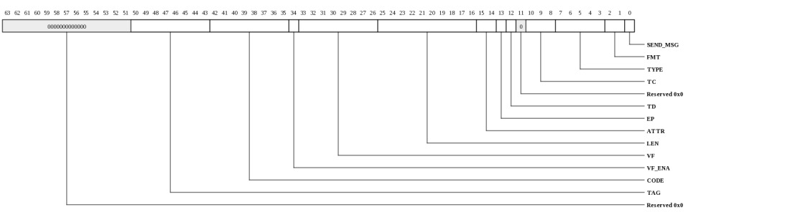
| Bits | Name | Type | Reset | Description
| 50:43 | TAG | RW | 0 | Message code |
| 42:35 | CODE | RW | 0 | Message code |
| 34 | VF_ENA | RW | 0 | VF value when VF is enabled |
| 33:26 | VF | RW | 0 | Virtual-function enabled |
| 25:16 | LEN | RW | 0 | Length field |
| 15:14 | ATTR | RW | 0 | Attributes |
| 13 | EP | RW | 0 | Poisoned |
| 12 | TD | RW | 0 | TLP Digest |
| 10:8 | TC | RW | 0 | Traffic class |
| 7:3 | TYPE | RW | 0 | Type field |
| 2:1 | FMT | RW | 0 | Format field |
| 0 | SEND_MSG | RW | 0 | Set by software when a vendor message is to be sent. Cleared by hardware once the message has been sent. Software must poll until SEND_MSG is clear before sending a new MSG. |
|
|---|
Vendor Message Data (TRIO_PCIE_INTFC_VEN_MSG_DAT: 0x00a8)
Data field for vendor-defined messages.
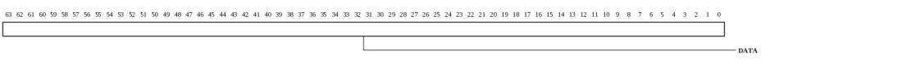
| Bits | Name | Type | Reset | Description
| 63:0 | DATA | RW | 0 | Data sent with vendor-defined messages. This forms DWORDs 3 and 4 of the vendor message packet. Bytes 6 and 5 form the vendorID and bytes 3 to 0 form bytes 12 to 15 (DWORD4). |
|
|---|
Power Management Interface Control (TRIO_PCIE_INTFC_PM_INTFC_CTL: 0x00b0)
Provides control and status related to power management and electromechanical interface.
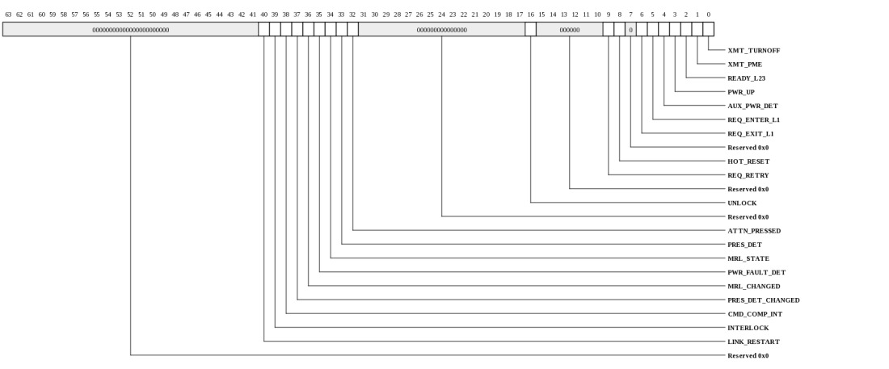
| Bits | Name | Type | Reset | Description
| 40 | LINK_RESTART | WO | 0 | Typically used to in RC mode to force wakeup from L2. When written with a 1, the link will be forced back to DETECT state and all power management state will be cleared. |
| 39 | INTERLOCK | RW | 0 | RC mode. Hot-Plug system electromechanical interlock engaged. Indicates whether the system electromechanical interlock is engaged and controls the state of the Electromechanical Interlock Status bit in the Slot Status register. |
| 38 | CMD_COMP_INT | RW | 0 | RC mode. Command completed interrupt indicates the Hot-Plug controller completed a command. |
| 37 | PRES_DET_CHANGED | RW | 0 | RC mode. Hot-Plug presence detect changed. |
| 36 | MRL_CHANGED | RW | 0 | RC mode. Hot-Plug MRL sensor changed. |
| 35 | PWR_FAULT_DET | RW | 0 | RC mode. Hot-Plug Power fault detected. |
| 34 | MRL_STATE | RW | 0 | RC mode. Hot-Plug MRL sensor state. |
| 33 | PRES_DET | RW | 0 | RC mode. Hot-Plug Presence detect state. |
| 32 | ATTN_PRESSED | RW | 0 | RC mode. Hot-Plug Attention button pressed. Controls the attention button pressed bit in the slot status register. |
| 16 | UNLOCK | WO | 0 | RC mode only. When written with a one, an unlock message will be generated. |
| 9 | REQ_RETRY | RW | 0 | EP or RC mode. Retry all incoming requests (including CFG for endpoint mode). Typically used if further initialization is required after link-up. |
| 8 | HOT_RESET | WO | 0 | RC mode. Application requests HotReset to be sent downstream. |
| 6 | REQ_EXIT_L1 | RW | 0 | EP or RC. Application requests exit from ASPM L1. |
| 5 | REQ_ENTER_L1 | RW | 0 | EP or RC. Application requests entrance in ASPM L1. This is used to override the L1 entry timer but will only take effect if L1 is enabled. |
| 4 | AUX_PWR_DET | RW | 1 | Determines value in device status register. |
| 3 | PWR_UP | WO | 0 | EP mode only. When written with a one, wakes up PMC state machine and causes core to send PM_PME message. |
| 2 | READY_L23 | RW | 1 | Typically left set to 1. But applications may deassert this if they require action to be taken prior to entering L23. Settting to 0 will cause PM_Enter_L23 messages to be delayed in response to PM_Turn_Off. |
| 1 | XMT_PME | WO | 0 | EP mode only. When written with a one, the endpoint wakes up (transmits beacon) and a PME message is sent. |
| 0 | XMT_TURNOFF | WO | 0 | RC mode only. When written with a one, PM turnoff message is sent and the link will typically transition to L2. Before putting the link into this state, software must shutdown any active DMAs and PIOs otherwise they could clog the interface and result in corrupted flows when the link is brought back up. To restart the link, for example after a beacon is received, write the LINK_RESTART bit. |
|
|---|
VF Function-Level-Reset (TRIO_PCIE_INTFC_VF_FLR_CTL: 0x00b8)
Controls function level reset handshake for virtual functions.
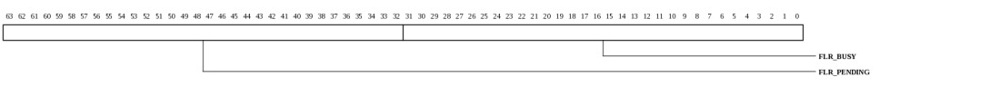
| Bits | Name | Type | Reset | Description
| 63:32 | FLR_PENDING | RO | 0 | Each bit corresponds to a VF. When set, FLR is pending for the associated VF and the FLR_BUSY bit must be cleared by software once all the VF's transactions are complete. |
| 31:0 | FLR_BUSY | RW | 0 | Each bit corresponds to a VF. When clear, the associated VF has completed reset. This typically means no DMA transactions will be sourced from the VF. Software should set this bit when DMAs are being enabled for the VF. If a VF FLR becomes active, software must clear the bit once transactions from the VF are complete (and within approximately 100 ms). |
|
|---|
PF Function-Level-Reset (TRIO_PCIE_INTFC_PF_FLR_CTL: 0x00c0)
Controls function level reset handshake for physical function zero.
| Bits | Name | Type | Reset | Description
| 32 | FLR_PENDING | RO | 0 | When set, FLR is pending for the PF and the FLR_BUSY bit must be cleared by software once all the PF's transactions are complete. |
| 0 | FLR_BUSY | RW | 0 | When clear, the associated PF has completed reset. This typically means no DMA transactions will be sourced from the PF. Software should set this bit when DMAs are being enabled for the PF. If a PF FLR becomes active, software must clear the bit once transactions from the PF are complete (and within approximately 100 ms). |
|
|---|
Reset Control (TRIO_PCIE_INTFC_RESET_CTL: 0x00c8)
Controls reset functions for the PCIe interface
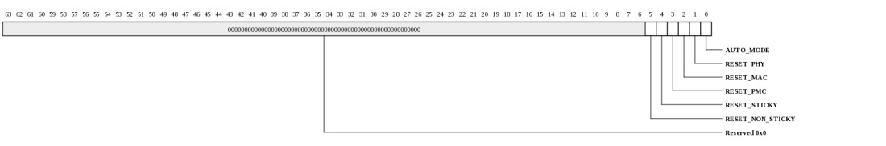
| Bits | Name | Type | Reset | Description
| 5 | RESET_NON_STICKY | RW | 1 | Controls reset to non-sticky registers in the MAC. When AUTO_MODE is 1, this bit indicates that the non-sticky registers will be reset when the link goes down. When AUTO_MODE is 0, this bit directly controls the non-sticky register reset. |
| 4 | RESET_STICKY | RW | 0 | Controls reset to sticky registers in the MAC. When AUTO_MODE is 1, this bit indicates that the sticky registers will be reset when the link goes down. When AUTO_MODE is 0, this bit directly controls the sticky register reset. |
| 3 | RESET_PMC | RW | 1 | Controls reset to power management control. The PMC will be reset at power up. When AUTO_MODE is 0, this bit directly controls the PMC reset. |
| 2 | RESET_MAC | RW | 1 | Controls primary reset to the MAC. The MAC will be reset at power up. When AUTO_MODE is 0, this bit directly controls the MAC reset. Note that asserting the MAC reset manually will prevent MMIO accesses to the MAC from completing normally. |
| 1 | RESET_PHY | RW | 0 | Controls reset to the PHY. When AUTO_MODE is 1, this bit indicates that the PHY will be reset when the link goes down. When AUTO_MODE is 0, this bit directly controls the PHY reset. |
| 0 | AUTO_MODE | RW | 1 | Controls behavior of PCIe MAC reset. When 1, the resets will be generated automatically. The RESET_x bits of this register determine what features will be reset. When AUTO_MODE is 0, the port's reset controls are managed manually and the RESET_x bits are used to control the individual feature resets. |
|
|---|
Stream Status (TRIO_PCIE_INTFC_STREAM_STATUS: 0x0100)
NOTE: This register only exists in the following devices: Gx9 Gx16 Gx36 Gx72.
Status of the StreamIO Port
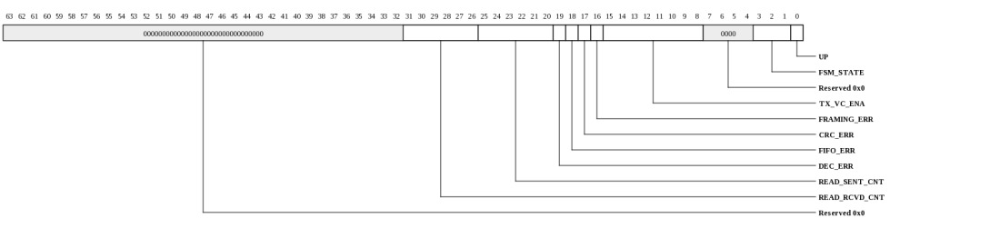
| Bits | Name | Type | Reset | Description
| 31:26 | READ_RCVD_CNT | RO | 0 | Rolling count of reads received from MAC (used for debug). The number of reads inflight to TRIO is READS_RCVD_CNT-READS_SENT_CNT (in 6-bit arithmetic). The bypass FIFO holds up to 32 reads to allow writes to pass reads. This counter value is valid for both PCIe and StreamIO. |
| 25:20 | READ_SENT_CNT | RO | 0 | Rolling count of reads sent to TRIO (used for debug). The number of reads inflight to TRIO is READS_RCVD_CNT-READS_SENT_CNT (in 6-bit arithmetic). The bypass FIFO holds up to 32 reads to allow writes to pass reads. This counter value is valid for both PCIe and StreamIO. |
| 19 | DEC_ERR | W1TC | 0 | Indicates an enabled lane reported a decoder error. |
| 18 | FIFO_ERR | W1TC | 0 | Indicates RX FIFO lost alignment. |
| 17 | CRC_ERR | W1TC | 0 | Indicates an RX packet had bad CRC. |
| 16 | FRAMING_ERR | W1TC | 0 | Indicates an RX packet's size field did not match the number of bytes received. |
| 15:8 | TX_VC_ENA | RO | 0 | Indicates the VCs that have been initialized by the remote device. RX only uses VC0 and it is always enabled. |
| 3:1 | FSM_STATE | RO | 0 | Indicates the current FSM state.
| Value | Name | Meaning |
|---|
| 0 | DISABLED | |
| 1 | LS0_WAIT | |
| 2 | LS0_ALIGN | |
| 3 | LS1_SYNC | |
| 4 | LS1_WAIT | |
| 5 | UP | |
|
| 0 | UP | RO | 0 | Indicates port is up. |
|
|---|
Stream Config (TRIO_PCIE_INTFC_STREAM_CONFIG: 0x0108)
NOTE: This register only exists in the following devices: Gx9 Gx16 Gx36 Gx72.
Configuration of the StreamIO Port
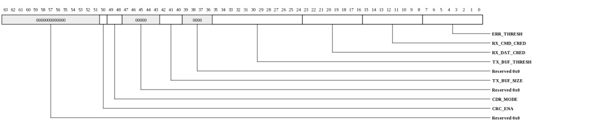
| Bits | Name | Type | Reset | Description
| 50 | CRC_ENA | RW | 0 | Enable CRC generation and checking. |
| 49:48 | CDR_MODE | RW | 0 | Mode for acquiring CDR coarse lock (StreamIO only).
| Value | Name | Meaning |
|---|
| 0 | AUTO | CDR will re-acquire coarse lock automatically based on 8b10b decoder errors and unaligned symbols. |
| 1 | IDLE_ONLY | CDR will re-acquire coarse lock only when idle (ignore decoder errors). |
| 2 | ALWAYS | CDR will be forced to continually lock (create constant stream of pseudo decoder errors to CDR). |
|
| 42:40 | TX_BUF_SIZE | RW | 0 | The StreamIO TX buffer provides skid space for data transfers to prevent blocking between VCs. The buffer is 2368 8-byte slices. Systems with fewer VCs can allocate more buffer space for each VC and hence provide non-blocking for larger packet sizes.
| Value | Name | Meaning |
|---|
| 0 | AUTO | The buffer allocation will be determined automatically as VCs are trained. This mode may be used as long as the connected component will enable all VCs prior to TileGX sending any traffic on the TX link. |
| 1 | TX_1_VC | All buffer space allocated to a single VC. The default TX_BUF_THRESH size may be used and any MPS may be used. This mode must only be used when TX VCs 1,2,3,4,5,6,7 are unused. |
| 2 | TX_2_VC | Buffer space is divided into 2 VCs. TX_BUF_THRESH should be set to 984 for optimum performance. Any MPS may be used. This mode must only be used when TX VCs 2,3,4,5,6,7 are unused. |
| 3 | TX_4_VC | Buffer space is divided into 4 VCs. TX_BUF_THRESH should be set to 392 for optimum performance. Any MPS may be used. This mode must only be used when TX VCs 4,5,6,7 are unused. |
| 4 | TX_8_VC | Buffer space is divided into 8 VCs. To prevent blocking between VCs, TX_BUF_THRESH should be set to 100 and the max MPS would be 512 bytes. |
|
| 35:24 | TX_BUF_THRESH | RW | 150 | Number of slices in the TX buffer at which the full signal will be sent back to the DMA engines. This is generally set based on the skid space in the TRIO->PCIe retime FIFO plus arbitration time. The amount of skid data can be up to 1536 bytes. Setting this threshold too small will reduce performance while setting too large may cause blocking between VCs. Each VC has 296 8-byte slices in the TX buffer in the 8-VC configuration. Each packet header consumes 2 slices. And reads consume 1 additional slice. This field is ignored if TX_BUF_SIZE is set to AUTO. |
| 23:16 | RX_DAT_CRED | RW | 43 | Number of data credits to provide to link partner. Each credit corresponds to 128 bytes of data and 8 local buffer slots. There are 381 local buffer slots to be divided between CMD and DAT credits. Thus RX_CMD_CRED + 8*RX_DAT_CRED must not exceed 381. |
| 15:8 | RX_CMD_CRED | RW | 37 | Number of command credits to provide to link partner. Each credit consumes one local buffer slot. |
| 7:0 | ERR_THRESH | RW | 255 | Number of errors to tolerate before initiating retraining. Error counter increments on 8b10b code error, disparity error, alignment error, or framing error. The counter decrements every 64 cycles. Setting to 255 will disable auto-retrain. |
|
|---|
Stream TX Command Credit (TRIO_PCIE_INTFC_STREAM_TX_CMD_CRED: 0x0110)
NOTE: This register only exists in the following devices: Gx9 Gx16 Gx36 Gx72.
Indicates command credits available for each VC
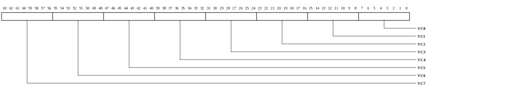
| Bits | Name | Type | Reset | Description
| 63:56 | VC7 | RO | 0 | Command credits available for VC7. |
| 55:48 | VC6 | RO | 0 | Command credits available for VC6. |
| 47:40 | VC5 | RO | 0 | Command credits available for VC5. |
| 39:32 | VC4 | RO | 0 | Command credits available for VC4. |
| 31:24 | VC3 | RO | 0 | Command credits available for VC3. |
| 23:16 | VC2 | RO | 0 | Command credits available for VC2. |
| 15:8 | VC1 | RO | 0 | Command credits available for VC1. |
| 7:0 | VC0 | RO | 0 | Command credits available for VC0. |
|
|---|
Stream TX Data Credit (TRIO_PCIE_INTFC_STREAM_TX_DAT_CRED: 0x0118)
NOTE: This register only exists in the following devices: Gx9 Gx16 Gx36 Gx72.
Indicates data credits available for each VC

| Bits | Name | Type | Reset | Description
| 63:56 | VC7 | RO | 0 | Data credits available for VC7. |
| 55:48 | VC6 | RO | 0 | Data credits available for VC6. |
| 47:40 | VC5 | RO | 0 | Data credits available for VC5. |
| 39:32 | VC4 | RO | 0 | Data credits available for VC4. |
| 31:24 | VC3 | RO | 0 | Data credits available for VC3. |
| 23:16 | VC2 | RO | 0 | Data credits available for VC2. |
| 15:8 | VC1 | RO | 0 | Data credits available for VC1. |
| 7:0 | VC0 | RO | 0 | Data credits available for VC0. |
|
|---|
Calibration Control (TRIO_PCIE_INTFC_CALIB_CTL: 0x0120)
NOTE: This register only exists in the following devices: Gx9 Gx16 Gx36 Gx72.
Controls SERDES calibration. Note that for x8 ports, the CALIB registers are not MUXed. Thus the registers for the associated x4 port must be used.
| Bits | Name | Type | Reset | Description
| 24 | CALIB_VLD | RW | 0 | Calibration value for the SERDES is valid. When this is 1, the CALIB_VAL will be used. When this is zero, the PMA's FSM will generate the calibration value. |
| 23:0 | CALIB_VAL | RW | 0 | Calibration value to provide to PMA when CALIB_MODE is SW |
|
|---|
Calibration Status (TRIO_PCIE_INTFC_CALIB_STS: 0x0128)
NOTE: This register only exists in the following devices: Gx9 Gx16 Gx36 Gx72.
Provides SERDES calibration status. Note that for x8 ports, the CALIB registers are not MUXed. Thus the registers for the associated x4 port must be used.

| Bits | Name | Type | Reset | Description
| 23:0 | CALIB_VAL | RO | 0 | Calibration value from SERDES. This is only valid for the SERDES connected to the external calibration resistor. And it is only valid if SERDES calibration was performed ((efuse/MMIO register value was not used). |
|
|---|
Diagnostics Control (TRIO_PCIE_INTFC_DIAG_CTL: 0x0130)
Provides control over PCIe diagnostics functions.
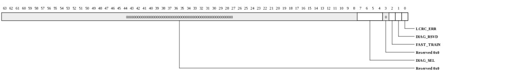
| Bits | Name | Type | Reset | Description
| 7:4 | DIAG_SEL | RW | 0 | Select diagnostics word to read on DIAG_STS |
| 2 | FAST_TRAIN | RW | 0 | Fast train mode (shortens various timers, reliable operation not guaranteed) |
| 1 | DIAG_RSVD | RW | 0 | Unused. |
| 0 | LCRC_ERR | RW | 0 | Force LCRC errors. |
|
|---|
Diagnostics Status (TRIO_PCIE_INTFC_DIAG_STS: 0x0138)
Provides PCIe diagnostics information based on DIAG_SEL.

| Bits | Name | Type | Reset | Description
| 63:0 | VAL | RO | 0 | Diagnostics information corresponding to DIAG_CTL.DIAG_SEL |
|
|---|
Copyright © 2014 Tilera® Corporation. All rights reserved.
Printed in the United States of America.
No part of this book may be reproduced, stored in a retrieval system,
or transmitted in any form or by any means, electronic, mechanical,
photocopying, recording, or otherwise, except as may be expressly permitted
by the applicable copyright statutes or in writing by the Publisher.
The following are registered trademarks of Tilera Corporation: Tilera
and the Tilera logo. The following are trademarks of Tilera
Corporation: Embedding Multicore, The Multicore Company, Tile
Processor, TILE Architecture, TILE64, TILEPro, TILEPro36, TILEPro64,
TILExpress, TILExpress-64, TILExpressPro-64, TILExpress-20G,
TILExpressPro-20G, TILExpressPro-22G, iMesh, TileDirect, TILEmpower,
TILEmpower-Gx, TILEncore, TILEncorePro, TILEncore-Gx, TILE-Gx,
TILE-Gx16, TILE-Gx36, TILE-Gx64, TILE-Gx100, TILE-Gx3000, TILE-Gx5000,
TILE-Gx8000, DDC (Dynamic Distributed Cache), Multicore Development
Environment, Gentle Slope Programming, iLib, TMC (Tilera Multicore
Components), hardwall, Zero Overhead Linux (ZOL), MiCA (Multicore
iMesh Coprocessing Accelerator), and mPIPE (multicore Programmable
Intelligent Packet Engine). All other trademarks and/or registered
trademarks are the property of their respective owners.
Third-party software: The Tilera IDE makes use of the BeanShell scripting
library. Source code for the BeanShell library can be found at the
BeanShell website (http://www.beanshell.org/developer.html).
The following is a trademark of Marvell Semiconductor, Inc.: Distributed
Switching Architecture (DSA).
This document contains advance information on Tilera products that are
in development, sampling or initial production phases. This information
and specifications contained herein are subject to change without notice
at the discretion of Tilera Corporation.
No license, express or implied by estoppels or otherwise, to any
intellectual property is granted by this document. Tilera disclaims any
express or implied warranty relating to the sale and/or use of Tilera
products, including liability or warranties relating to fitness for
a particular purpose, merchantability or infringement of any patent,
copyright or other intellectual property right.
Products described in this document are NOT intended for use in medical,
life support, or other hazardous uses where malfunction could result in
death or bodily injury.
THE INFORMATION CONTAINED IN THIS DOCUMENT IS PROVIDED ON AN "AS IS"
BASIS. Tilera assumes no liability for damages arising directly or
indirectly from any use of the information contained in this document.